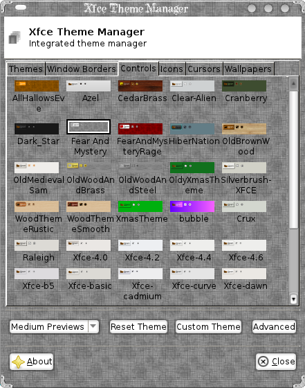
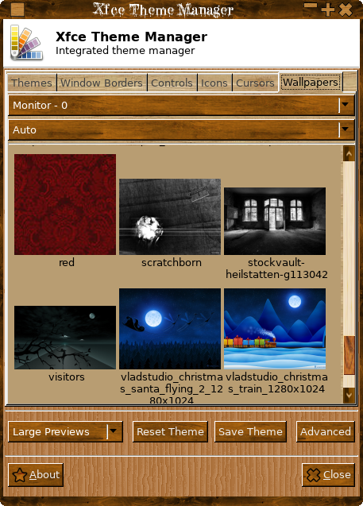

Having switched to Xfce from gnome one of the main annoyances I have found is having multiple settings GUI's for setting the theme, one for the window border and one for the controls/icons and neither include thumbnails!
As I like to switch themes and mix and match this soon became VERY irritating hence this application, as you can see from the screenshots only one GUI is used to set all the bits of a theme, the "Themes" tab contains themes that have an integrated window border/control theme ( and if there is a gnome-like theme.index file that specifies an icon set this will be used as well ), everything is fairly self explanatory, just click on a thumbnail to set a particular theme/window border/control/icon set.
Full installation/usage
Meta theme tab
Window border tab

Controls tab

Icons tab

Cursors tab
Wallpapers tab

Advanced

Custom Theme Dialog

Instructions
Released under GPL see the included licence file ( {prefix}/share/Xfce-Theme-Manager/docs/gpl-3.0.txt )
Translations of the licence can be found here:
http://www.gnu.org/licenses/translations.html
PLEASE NOTE!!
This project is now in maintenence mode,I will NOT be accepting ANY new feature requests.
I will ONLY be accepting/fixing bugs.
DEPENDENCIES:
glib-2.0
gdk-2.0
cairo
gtk+-2.0
unzip - Runtime dependency to drag and drop zip archives.
EXTERNAL APPS (Optional):
Xfce4-Composite-Editor Available here:
https://github.com/KeithDHedger/Xfwm4CompositeEditor/archive/xfce4-composite-editor-0.2.2.tar.gz
CLI Usage: xfce-theme-manager [option.1] ... [option.N]
OPTIONS
| -v, --version | Print version info and quit |
| -u, --update-db | Update the database |
| -r, --build-db | Re-build the database |
| -n, --nogui | Don't run the GUI |
| -t, --theme=ARG | ARG Set the meta-theme to ARG |
| -c, --controls=ARG | Set the controls theme to ARG |
| -w, --wmborder=ARG | ARG Set the window border to ARG |
| -i, --icons=ARG | Set the icon theme to ARG |
| -p, --cursors=ARG | Set the cursor theme to ARG |
| -b, --backdrop=ARG | Set wallpaper to ARG |
| -l, --list=ARG | List DB entry's, where ARG = any of "\*Ctwcib" |
| -?, --help | This help |
Where 'C' prints custom themes, 't' prints themes,
'w' prints window borders, 'c' prints controls,
'i' prints icons and 'b' prints backdrops.
If the first/only character is a '\*' then all entry's are printed.
Options tcwipblvh? all imply -n
[Themes Tab]
[Reset Theme]
Discard all changes.
[Save Theme]
Enter a custom theme name to save/delete, you can also quickly delete a custom theme by control-clicking a custom theme thumbnail.
[About]
Credits and stuff.
[Advanced Tab]
[Rebuild DB]
Rebuild the database.
[Xfce-Composite-Editor]
Run the composite editor (if installed).
Available here:
Xfwm4CompositeEditor
You need to have gtkdialog version 0.8.x and BASH installed To run the Composite Editor.
[Panels]
Panel size, image etc.
[Backdrop Adjustments]
Set Brightness/Saturation of the wallpaper.
[Button Layout]
The layout of close, maximize etc. (some themes may overide this).
[Title Position]
Placement of the window title, (some themes may overide this).
[Font Selection]
Title bar/application font.
[Cursor Size]
Set the cursor size if the cursor theme suports it, some do some don't.
[View Options]
[Show System Themes]
Show globally installed theme parts.
[Only show Custom Themes]
Only shows meta themes that you have created, auto generated meta themes are not shown.
[Themes]
Show installed meta themes.
[Window Borders]
Show installed Xwm4 themes.
[Controls]
Show installed Gtk themes.

[Icons]
Show installed icon themes.

[Cursors]
Show installed cursor themes.

[Wallpapers]
Show installed wallpapers.

Locally installed themes parts are always shown except for meta themes if the [Only show Custom Themes] is checked.
You can quickly delete a custom theme by holding control and clicking on the thumbnail, only custom themes you have created can be deleted and only the database entry is removed nothing is uninstalled from your system.
To install a theme/gtk/icon/cursor/border/wallpaper just drag and drop the archive (wallpapers should not be archived) anywhere on the main window and if posible the theme etc will be installed into the correct place, all installations are local, supported archive types are: "*.tgz","*.gz","*.zip","*.tar","*.bz2", supported wallpaper types are: "*.jpg","*.png","*.bmp","*.gif" anything else you will have to install yourself.
You must have unzip installed to drag 'n' drop .zip files.
The thumbnails are stored in ${HOME}/.config/XfceThemeManager.
The DB is updated automatically on drag'n'drop, if you do a lot of adding and removing of themes/icons etc you may want to run Re-build DB from the advanced tab.
Meta Themes are themes that contain a gtk2 folder and an xfwm4 folder (ie window frames and controls), if there is a gnome-like "theme.index" file that also specifies an icon set this will be used as well.
Spanish/German is now catered for if you have set the 'LANG' enviroment variable properly, other translations are invited email me for a list to be translated.
INSTALL:
Extract the archive say into /tmp, cd into /tmp/Xfce-Theme-Manager-(VERSION), run ./autogen.sh ( or ./configure ), make, sudo make install, this will install the Xfce-Theme-Manager GUI, icon and the desktop file.
The GUI can be run from the command line or from the settings menu.
The GUI can be manually installed and/or run from the main folder.
There is no configure script as the makefile is very simple, default is to install in /usr/local/bin this can be changed by setting the PREFIX variable prior to make install ( sudo make install PREFIX=/usr ).
If you have a source based pkg manager like slackware the dev files for glib etc should already be installed, if you are using a debian based install you may have to install the dev packages as well, from a terminal for a clean system type:
sudo apt-get update
sudo apt-get install build-essential glib-2.0-dev libgtk2.0-dev libxfce4ui-1-dev
Check your installation documentation for further details, but this works on a new clean version of xubuntu-12.10, other flavours of debian based installs should be the same. You may have to access xfce-theme-manager via the main settings manager in the main menu.
You may have to run xfce4-panel --restart to see the Xfce-Theme-Manager menu item in settings.
If you are upgrading from an older version please rebuild the DB ( from the "Advanced" tab ).
BUGS:
Please send them direct to me at: keithdhedger@gmail.com posting them on xfce-look etc gets too messy!
Enjoy!
Download Xfce-Theme-Manager-0.3.7
Old Versions
Back To Top
Applications